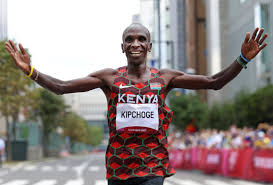
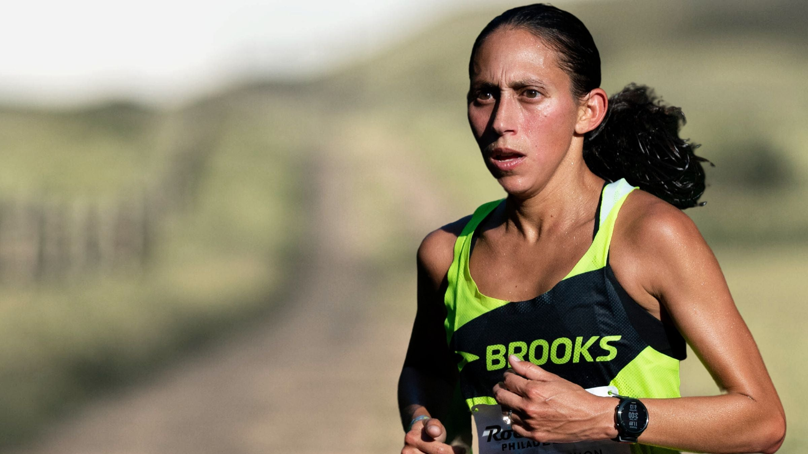
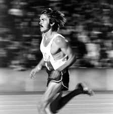
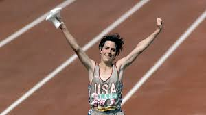
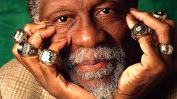

Module 1 — Leadership Begins with Values and Identity
Framework
- Define your core values (effort, honesty, respect, accountability).
- Align behaviors with those values—every day.
- Build a shared identity: What do we want to be known for?
- Leaders go first: consistency creates trust.
Coach K
Duke & Team USA — identity + values-based leadership

Eliud Kipchoge
Discipline as identity: daily standards become who you are
Module 2 — Communication + Trust = Strong Teams
Framework
- Communicate early, often, and clearly.
- Listen deeply—communication is two-way.
- Create an environment where honesty is safe.
- Trust grows from reliability and follow-through.

Tom Brady
The trust builder: honest, real-time leadership that elevates teammates
Derek Jeter
Calm, clear, dependable: leadership through steadiness and respect
Module 3 — Standards Over Rules
Framework
- Rules come from authority; standards come from shared identity.
- Standards reflect who we are, not what we avoid.
- Leaders protect standards even when no one is watching.

Pat Summitt
The Definite Dozen: standards that shape character and accountability

Shalane Flanagan
Culture architect: excellence built through daily professional norms
Module 4 — The Power of Discipline and Daily Excellence
Framework
- Show up every day, especially on the hard days.
- Fall in love with the process, not the outcome.
- Small habits compound into elite performance.
- Consistency builds trust—your team can rely on you.
“To give anything less than your best is to sacrifice the gift.” — Steve Prefontaine

Des Linden
“Keep showing up” — consistency under adversity
Meredith Valmon (Rainey)
Discipline + deliberate training: daily precision wins

Steve Prefontaine
Courage as commitment: effort as a leadership signature
Module 5 — Adversity as a Leadership Advantage
Framework
- Adversity reveals what you believe and who you are.
- Respond with ownership: “What can I control next?”
- Use setbacks to build empathy and resilience.
- Let hardship deepen your leadership, not harden it.

Michael Jordan
Rising through setbacks: rejection turned into fuel
Kenenisa Bekele
The art of the comeback: resilience through time + work
Meredith Valmon (Rainey)
Resilience through injury: rebuild with patience and purpose
Module 6 — Servant Leadership: Lifting Others First
Framework
- Make teammates better—especially the quiet ones.
- Lead with humility: your role is to elevate the group.
- Share credit; take responsibility.
- Serve consistently, not performatively.
Mia Hamm
Team above self: leadership through humility and work
Eliud Kipchoge
Servant leader: respect, community, and shared success
Meredith Valmon (Rainey)
Coaching as service: develop people, not just athletes
Module 7 — Competitive Fire with Emotional Control
Framework
- Compete with intensity, but stay composed.
- Detach your identity from outcomes.
- Use routines to reset (breath, self-talk, next-play focus).
- Emotional control is contagious—teams mirror leaders.

Serena Williams
Passion with precision: intensity under control
Mo Farah
Calm amid chaos: composed decision-making under stress
Module 8 — Preparation Builds Confidence
Framework
- Prepare early; remove chaos from game day.
- Rehearse fundamentals until they are automatic.
- Build routines: sleep, nutrition, warmup, mindset.
- Preparation creates freedom under pressure.

Kobe Bryant
The Mamba routine: mastery through relentless preparation

Joan Benoit Samuelson
Olympic preparation mastery: quiet consistency and precision
Meredith Valmon (Rainey)
Precision in preparation: details create confidence
Module 9 — Leadership Under Pressure
Framework
- Pressure is information: it shows where you need reps.
- Stay present: next play, next breath, next decision.
- Anchor to values: calm is a choice.
- Great leaders transfer confidence to the group.
Coach K
Olympic-level poise: calm leadership when everything is at stake
Eliud Kipchoge
Composure at the edge: calm execution under extreme demand
Module 10 — Legacy, Impact, and Leadership Beyond Sport
Framework
- Mentor those behind you.
- Leave environments better than you found them.
- Measure success by influence, not attention.
- Use your gifts to serve something bigger than yourself.

Bill Russell
Championships + justice + humility: legacy through impact
Eliud Kipchoge
Community builder: leadership through service and example
Meredith Valmon (Rainey)
Legacy through coaching: multiplying leadership in others